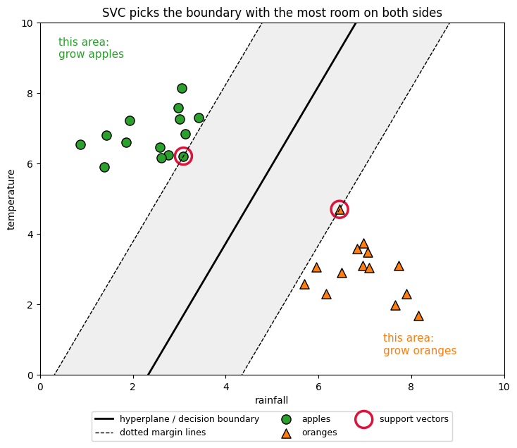
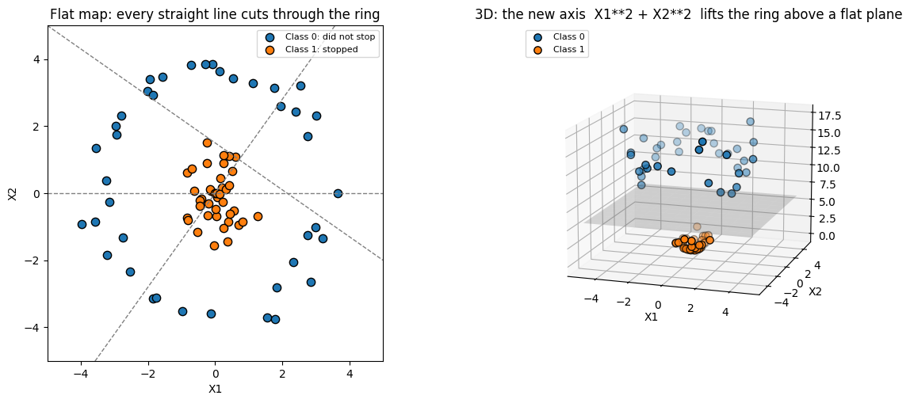
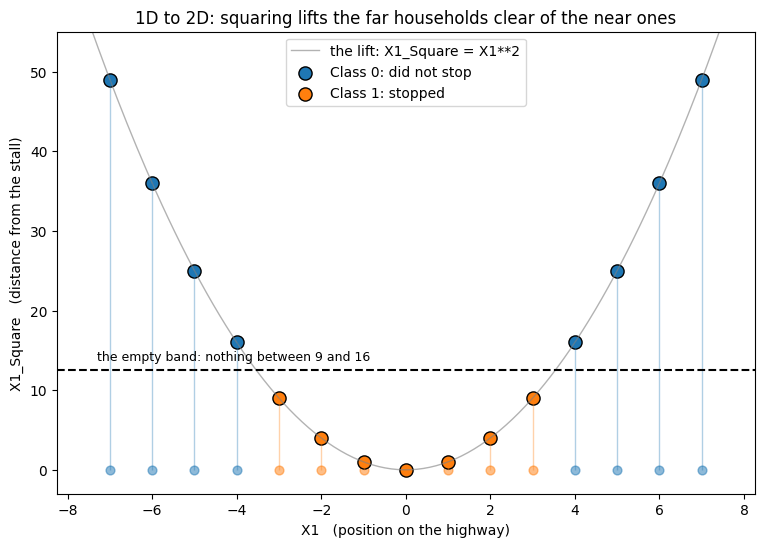
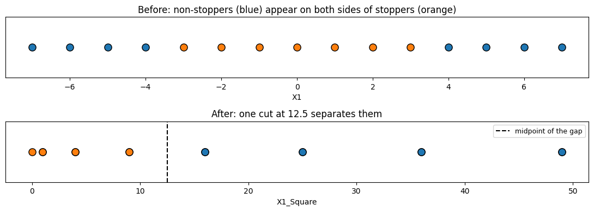
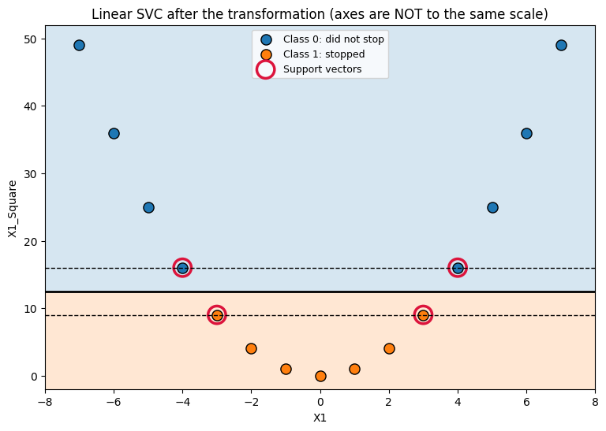
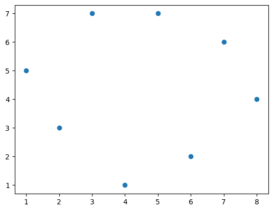
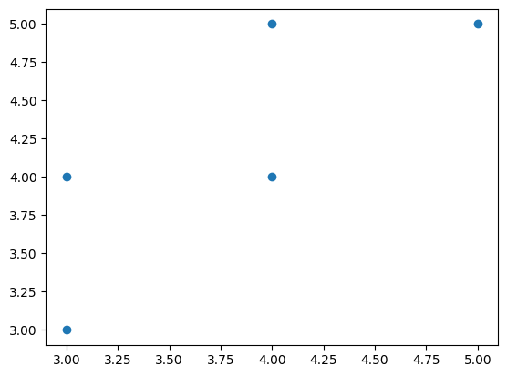
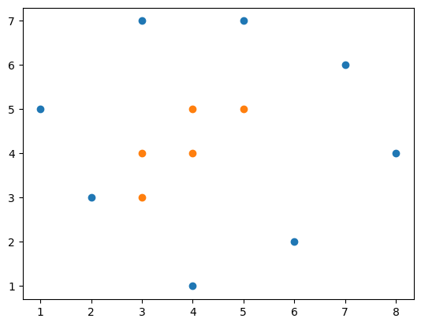

Not just a line that separates — the line with the widest possible gap.
2 notebooks
The problem behind this topic
Ramesh could draw a hundred lines that separated his two groups. Every one of them was correct on the training data.
But some passed within a hair of a point. The first new customer who landed slightly to the left would be classified wrongly.
Correct on today's data is not the same as safe on tomorrow's.
SVC picks the line with the widest empty corridor around it. And when the groups form a ring that no straight line can cut, the kernel trick lifts them into a higher dimension where a flat plane can separate them.
🔑 The one idea
Maximise the margin. When no straight line works, add a dimension until one does.
Ramesh runs a tea stall on a long straight highway.
He wants to print leaflets, but only for the households that will actually walk
over and buy tea. Printing for everyone costs too much. So he needs to predict,
for a household he has not visited yet: will this one stop or not?
He has exactly one number for each household — where it sits on the highway,
measured from his stall. West is negative, east is positive. -7 means seven
units west, +7 means seven units east.
He collects fifteen records and tries the simplest rule he can think of:
Note
"Everyone from some point onward will stop."
It fails. Not slightly — whatever cut-off he picks, he gets at least four of the
fifteen households wrong.
Why it fails
Ramesh's data is not noisy. His two groups do not even touch: every household
that stops is within 3 units of the stall, every household that does not is 4 or
more away.
The problem is the question. He asked which side of me is this household on?
But the households that stop are the ones that live close — and close means
close on both sides. His single cut-off has to hand one whole side to each
answer, so it can never describe "the middle".
The fix
Not a bigger model. One better column: distance from the stall instead of
side. Squaring his number does exactly that — it throws away east-versus-west
and keeps only how far.
position (west -, east +) -> no single cut-off works
position squared = distance -> near and far separate cleanly
SVC -> places the cut in the safest spot in the gap
This is a classification problem: the answer is a category (0 = does not stop,
1 = stops), not a number.
codecell 1
import matplotlib.pyplot as plt
import numpy as np
import pandas as pd
D1 — households that did not stop: positions -7 to -4, and 4 to 7 -> class 0
D2 — households that did stop: positions -3 to 3 -> class 1
Both arrays carry a second column that is always 0. That becomes X2. Ramesh
only ever measured one thing, so this column holds no information and the data
really lives on a single axis.
Before running the next cell, be Ramesh for a moment: pick one cut-off on the
highway, say everything below it stops and everything above it does not. Then
count how many of the fifteen you got wrong.
codecell 5
# Ramesh's highway, drawn as a number line.
# Then: what is the BEST cut-off that exists? Not a guessed one - search
# every possible cut-off and keep the one that gets the most right.
x_all = np.concatenate([D1[:, 0], D2[:, 0]])
y_all = np.concatenate([np.zeros(len(D1)), np.ones(len(D2))])
best_cut, best_correct = None, -1
for cut in np.arange(-8, 8.5, 0.5):
# try the rule both ways round, so we are not accidentally handicapping it
for pred in (np.where(x_all < cut, 1, 0), np.where(x_all < cut, 0, 1)):
correct = (pred == y_all).sum()
if correct > best_correct:
best_correct, best_cut = correct, cut
plt.figure(figsize=(11, 2.6))
plt.scatter(D1[:, 0], np.zeros(len(D1)), s=90, color='tab:blue',
edgecolor='black', label='Class 0: did not stop')
plt.scatter(D2[:, 0], np.zeros(len(D2)), s=90, color='tab:orange',
edgecolor='black', label='Class 1: stopped')
plt.axvline(best_cut, color='black', linestyle='--', linewidth=1.5)
plt.text(best_cut - 0.3, 0.22, f'best possible cut-off\n(position = {best_cut})',
ha='right', fontsize=9)
plt.annotate('', xy=(7.5, -0.22), xytext=(4, -0.22),
arrowprops=dict(arrowstyle='<->', color='tab:blue'))
plt.text(5.75, -0.38, 'more non-stoppers, over here', ha='center',
fontsize=9, color='tab:blue')
plt.yticks([])
plt.ylim(-0.55, 0.62)
plt.xlabel('X1')
plt.title("Non-stoppers lie on BOTH sides, so one cut-off can never fit")
plt.legend(loc='upper right', fontsize=9)
plt.show()
print(f'Best possible cut-off: {best_correct} of {len(y_all)} correct '
f'({best_correct / len(y_all):.0%})')
print('The failure is structural, not a tuning problem.')
Output
Best possible cut-off: 11 of 15 correct (73%)
The failure is structural, not a tuning problem.
His original column answers: is this household west or east of me?
Wrong question. Whether someone walks over depends on something else entirely:
how far away are they?
Squaring answers that. It throws the direction away and keeps the distance:
position
-7
-4
-3
0
3
4
7
squared
49
16
9
0
9
16
49
Now look at where each group lands in the new column:
households that stop occupy 0, 1, 4, 9
households that do not occupy 16, 25, 36, 49
Nothing sits between 9 and 16. That empty band of width 7 is what makes the
problem solvable, and it is what SVC will aim at.
Notice what did not change: the classifier. Ramesh changed the column he hands
it. That is feature engineering.
Step 3: What is SVC actually looking for?
Before handing Ramesh's data over, look at an easier case — one where a straight
boundary already works — so you can see what the model is choosing.
Lakshmi owns a fruit farm. For each field she has recorded two things, and whether
apples or oranges grew better there. Her two groups sit apart cleanly, so
many different straight lines would separate them.
Which line should she use? A line squeezed right up against the apple fields is
technically correct, but the first new field that lands slightly off gets
misclassified. SVC picks the line with the most room on both sides.
Three names for the three things in the picture below:
the hyperplane is the boundary itself, $w^\top x + b = 0$ — the solid line;
the two margin lines sit at $w^\top x + b = \pm 1$ — the dotted lines;
the points touching those dotted lines are the support vectors.
The last one is the surprising part. Only those few points hold the boundary in
place. Every other field could move, or be deleted, and the line would not shift.
codecell 14
# Lakshmi's farm: the easy case, where a straight boundary already works.
# One hyperplane, two dotted margin lines, and the support vectors holding it.
from sklearn.svm import SVC
rng = np.random.default_rng(7)
apples = rng.normal(loc=[3.0, 7.0], scale=0.85, size=(14, 2))
oranges = rng.normal(loc=[7.0, 3.0], scale=0.85, size=(14, 2))
fruit_X = np.vstack([apples, oranges])
fruit_y = np.r_[np.zeros(len(apples)), np.ones(len(oranges))]
fruit_svc = SVC(kernel='linear', C=1e6).fit(fruit_X, fruit_y)
w, b = fruit_svc.coef_[0], fruit_svc.intercept_[0]
line_x = np.linspace(0, 10, 100)
boundary = -(w[0] * line_x + b) / w[1] # w.x + b = 0
margin_up = -(w[0] * line_x + b - 1) / w[1] # w.x + b = +1
margin_dn = -(w[0] * line_x + b + 1) / w[1] # w.x + b = -1
fig, ax = plt.subplots(figsize=(8.5, 6.5))
ax.fill_between(line_x, margin_dn, margin_up, color='gray', alpha=0.12)
ax.plot(line_x, boundary, color='black', linewidth=2,
label='hyperplane / decision boundary')
ax.plot(line_x, margin_up, color='black', linestyle='--', linewidth=1,
label='dotted margin lines')
ax.plot(line_x, margin_dn, color='black', linestyle='--', linewidth=1)
ax.scatter(apples[:, 0], apples[:, 1], s=90, marker='o', color='tab:green',
edgecolor='black', label='apples')
ax.scatter(oranges[:, 0], oranges[:, 1], s=90, marker='^', color='tab:orange',
edgecolor='black', label='oranges')
ax.scatter(fruit_svc.support_vectors_[:, 0], fruit_svc.support_vectors_[:, 1],
s=300, facecolors='none', edgecolors='crimson', linewidths=2.5,
label='support vectors')
ax.text(0.4, 9.0, 'this area:\ngrow apples', fontsize=11, color='tab:green')
ax.text(7.4, 0.6, 'this area:\ngrow oranges', fontsize=11, color='tab:orange')
ax.set_xlim(0, 10)
ax.set_ylim(0, 10)
ax.set_xlabel('rainfall')
ax.set_ylabel('temperature')
ax.set_title('SVC picks the boundary with the most room on both sides')
ax.legend(loc='upper center', bbox_to_anchor=(0.5, -0.09), ncol=3, fontsize=9)
plt.show()
print(f'margin width : {2 / np.linalg.norm(w):.2f}')
print(f'support vectors: {len(fruit_svc.support_vectors_)} out of {len(fruit_X)} points')
print('Every other point could be moved and the boundary would not shift.')
Output
margin width : 3.69
support vectors: 2 out of 28 points
Every other point could be moved and the boundary would not shift.

Output from this notebook.
Step 4: When one new column is not enough
Ramesh's problem needed exactly one new column, because he only ever measured one
thing. Suppose he moves to a town and starts recording two numbers per household —
how far east and how far north of the stall it is.
Now the households that stop form a blob around the stall, and the ones that
do not form a ring around them. On a flat map no straight line can separate a
blob from the ring around it. Any line you draw cuts straight through both.
The escape is the same trick, one size up:
Measurements
Add
Ends up
1 (position)
$x_1^2$
2D — this notebook
2 (east, north)
$x_1^2 + x_2^2$
3D — the figure below
The new column is still just distance. It lifts the ring high and leaves the blob
on the floor, and a flat plane slides into the space between them.
Doing this without building the columns by hand
Two measurements are easy. But a full degree-2 expansion of two features already
produces five new columns:
With ten features it is unmanageable. A kernel computes the answer as if
those columns existed, without ever building them:
K(x, z) = (x^\top z + 1)^d
At $d = 2$ that is exactly the five-column view above. kernel='poly' gives you
polynomial columns, kernel='rbf' gives a more flexible curved view.
Ramesh needs neither. With his second column stuck at zero, every term containing
$x_2$ — that is $x_1x_2$ and $x_2^2$ — collapses to zero too. The only new feature
that survives is $x_1^2$, and that is the one column we built by hand.
codecell 16
# Ramesh in town: two measurements per household instead of one.
# The households that stop form a blob around the stall, the rest form a ring.
# Same trick as before, one size up: add X1**2 + X2**2.
rng = np.random.default_rng(3)
inner_r, inner_t = rng.uniform(0.0, 1.6, 40), rng.uniform(0, 2 * np.pi, 40)
inner = np.c_[inner_r * np.cos(inner_t), inner_r * np.sin(inner_t)]
outer_r, outer_t = rng.uniform(3.0, 4.2, 40), rng.uniform(0, 2 * np.pi, 40)
outer = np.c_[outer_r * np.cos(outer_t), outer_r * np.sin(outer_t)]
inner_z = (inner ** 2).sum(axis=1)
outer_z = (outer ** 2).sum(axis=1)
fig = plt.figure(figsize=(13, 5.5))
# Left: the 2D view. Try a few straight lines - every one of them fails.
ax1 = fig.add_subplot(1, 2, 1)
ax1.scatter(outer[:, 0], outer[:, 1], s=55, color='tab:blue',
edgecolor='black', label='Class 0: did not stop')
ax1.scatter(inner[:, 0], inner[:, 1], s=55, color='tab:orange',
edgecolor='black', label='Class 1: stopped')
for slope, offset in [(0.0, 0.0), (1.4, 0.0), (-0.7, 1.5)]:
ax1.plot([-5, 5], [-5 * slope + offset, 5 * slope + offset],
color='gray', linestyle='--', linewidth=1)
ax1.set_xlim(-5, 5)
ax1.set_ylim(-5, 5)
ax1.set_aspect('equal')
ax1.set_xlabel('X1')
ax1.set_ylabel('X2')
ax1.set_title('Flat map: every straight line cuts through the ring')
ax1.legend(loc='upper right', fontsize=8)
# Right: add the third axis. Now a flat plane fits in the gap.
ax2 = fig.add_subplot(1, 2, 2, projection='3d')
ax2.scatter(outer[:, 0], outer[:, 1], outer_z, s=45, color='tab:blue',
edgecolor='black', label='Class 0')
ax2.scatter(inner[:, 0], inner[:, 1], inner_z, s=45, color='tab:orange',
edgecolor='black', label='Class 1')
plane_at = (inner_z.max() + outer_z.min()) / 2
pg = np.linspace(-5, 5, 12)
pgx, pgy = np.meshgrid(pg, pg)
ax2.plot_surface(pgx, pgy, np.full_like(pgx, plane_at), alpha=0.25, color='gray')
ax2.set_xlabel('X1')
ax2.set_ylabel('X2')
ax2.set_box_aspect(None, zoom=0.90)
ax2.view_init(elev=14, azim=-72) # look almost edge-on, so the lift is visible
ax2.set_title('3D: the new axis X1**2 + X2**2 lifts the ring above a flat plane')
ax2.legend(loc='upper left', fontsize=8)
fig.subplots_adjust(left=0.06, right=0.97, wspace=0.02)
plt.show()
flat_2d = SVC(kernel='linear').fit(np.vstack([outer, inner]),
np.r_[np.zeros(40), np.ones(40)])
lifted = SVC(kernel='linear', C=1e6).fit(
np.c_[np.vstack([outer, inner]), np.r_[outer_z, inner_z]],
np.r_[np.zeros(40), np.ones(40)])
print(f'best straight line in 2D : {flat_2d.score(np.vstack([outer, inner]), np.r_[np.zeros(40), np.ones(40)]):.0%} correct')
print(f'flat plane in 3D : {lifted.score(np.c_[np.vstack([outer, inner]), np.r_[outer_z, inner_z]], np.r_[np.zeros(40), np.ones(40)]):.0%} correct')
print(f'the plane sits at X1**2 + X2**2 = {plane_at:.2f}, in the gap between '
f'{inner_z.max():.2f} and {outer_z.min():.2f}')
Output
best straight line in 2D : 74% correct
flat plane in 3D : 100% correct
the plane sits at X1**2 + X2**2 = 5.78, in the gap between 2.43 and 9.14

Output from this notebook.
codecell 17
# What squaring does to Ramesh's highway: 1D -> 2D.
# Position alone is one axis. Adding position-squared gives a second axis,
# and every household rises onto a parabola - near ones stay low, far ones go high.
fig, ax = plt.subplots(figsize=(9, 6))
curve_x = np.linspace(-7.5, 7.5, 200)
ax.plot(curve_x, curve_x ** 2, color='gray', linewidth=1, alpha=0.6,
label='the lift: X1_Square = X1**2')
class_0 = final[final['Y'] == 0]
class_1 = final[final['Y'] == 1]
# Show each point starting on the number line and rising to where it lands.
for frame, colour in [(class_0, 'tab:blue'), (class_1, 'tab:orange')]:
ax.vlines(frame['X1'], 0, frame['X1_Square'], colors=colour,
alpha=0.35, linewidth=1)
ax.scatter(frame['X1'], np.zeros(len(frame)), s=40, color=colour, alpha=0.5)
ax.scatter(class_0['X1'], class_0['X1_Square'], s=90, color='tab:blue',
edgecolor='black', label='Class 0: did not stop')
ax.scatter(class_1['X1'], class_1['X1_Square'], s=90, color='tab:orange',
edgecolor='black', label='Class 1: stopped')
ax.axhline(12.5, color='black', linestyle='--', linewidth=1.5)
ax.text(-7.3, 13.8, 'the empty band: nothing between 9 and 16', fontsize=9)
ax.set_xlabel('X1 (position on the highway)')
ax.set_ylabel('X1_Square (distance from the stall)')
ax.set_ylim(-3, 55)
ax.set_title('1D to 2D: squaring lifts the far households clear of the near ones')
ax.legend(loc='upper center')
plt.show()

Output from this notebook.
codecell 18
# How this plot is drawn, and why.
#
# It is tempting to put the class label on the Y axis. Do not. The two classes
# then sit on separate rows automatically, so BOTH panels look separated even
# when the feature is useless - you would be plotting the answer.
#
# Here the class is shown by colour only. Any separation you can see has to
# come from the X axis alone, which is the thing being compared.
class_0 = final[final['Y'] == 0]
class_1 = final[final['Y'] == 1]
fig, axes = plt.subplots(2, 1, figsize=(11, 4.0))
panels = [
(axes[0], 'X1', 'Before: non-stoppers (blue) appear on both sides of stoppers (orange)'),
(axes[1], 'X1_Square', 'After: one cut at 12.5 separates them'),
]
for ax, column, title in panels:
ax.scatter(class_0[column], np.zeros(len(class_0)), s=90,
color='tab:blue', edgecolor='black')
ax.scatter(class_1[column], np.zeros(len(class_1)), s=90,
color='tab:orange', edgecolor='black')
ax.set_xlabel(column)
ax.set_title(title)
ax.set_yticks([])
axes[1].axvline(12.5, color='black', linestyle='--', label='midpoint of the gap')
axes[1].legend(loc='upper right', fontsize=9)
plt.tight_layout()
plt.show()

Output from this notebook.
Step 5: Hand Ramesh's data to SVC
Now we give SVC both columns, position and position-squared, and let it search.
SVC(kernel='linear', C=1e6) means: find a straight boundary, and use a very
large C so the model is not allowed to trade mistakes for a wider margin. The
groups are cleanly separated, so demanding zero mistakes is safe here.
Two things to check in the output:
The weight on the original position column should come out at essentially
zero. If it does, SVC worked out by itself that east-versus-west is useless,
and the boundary is the flat line X1_Square = 12.5 we predicted in Step 2.
There should be exactly four support vectors, at positions -4, -3, 3, 4 —
the households on either edge of the empty band. Every other household could
move without shifting Ramesh's rule.
One caution about reading the picture
The margin is a geometric distance, but the two axes are not on the same
scale: position spans about 16 units while position-squared spans about 54.
Matplotlib stretches both to fill the same square box, so the dotted margin lines
will look much narrower than they are. Trust the printed numbers.
codecell 20
from sklearn.svm import SVC
X = final[['X1', 'X1_Square']]
y = final['Y']
svc_linear = SVC(kernel='linear', C=1e6)
svc_linear.fit(X, y)
# Build a grid so we can see the regions learned by the classifier.
x1_grid = np.linspace(-8, 8, 300)
x1_square_grid = np.linspace(-2, 52, 300)
grid_x1, grid_x1_square = np.meshgrid(x1_grid, x1_square_grid)
grid = pd.DataFrame(
np.c_[grid_x1.ravel(), grid_x1_square.ravel()],
columns=X.columns
)
decision_values = svc_linear.decision_function(grid).reshape(grid_x1.shape)
plt.figure(figsize=(9, 6))
plt.contourf(
grid_x1,
grid_x1_square,
decision_values,
levels=[-np.inf, 0, np.inf],
alpha=0.18,
colors=['tab:blue', 'tab:orange']
)
plt.contour(
grid_x1,
grid_x1_square,
decision_values,
levels=[-1, 0, 1],
colors='black',
linestyles=['--', '-', '--'],
linewidths=[1, 2, 1]
)
plt.scatter(class_0['X1'], class_0['X1_Square'], s=90, color='tab:blue',
edgecolor='black', label='Class 0: did not stop')
plt.scatter(class_1['X1'], class_1['X1_Square'], s=90, color='tab:orange',
edgecolor='black', label='Class 1: stopped')
plt.scatter(
svc_linear.support_vectors_[:, 0],
svc_linear.support_vectors_[:, 1],
s=260,
facecolors='none',
edgecolors='crimson',
linewidths=2.5,
label='Support vectors'
)
plt.xlabel('X1')
plt.ylabel('X1_Square')
plt.title('Linear SVC after the transformation (axes are NOT to the same scale)')
plt.legend(loc='upper center', fontsize=9)
plt.show()
# Read the model instead of eyeballing the plot.
w = svc_linear.coef_[0]
b = svc_linear.intercept_[0]
print(f'learned boundary : ({w[0]:+.3g}) * X1 + ({w[1]:+.3g}) * X1_Square + ({b:+.3g}) = 0')
print(f'weight on X1 : {w[0]:.2e} -> effectively zero, X1 is ignored')
print(f'so the boundary is the flat line X1_Square = {-b / w[1]:.2f}')
print(f'margin half-width: {1 / np.linalg.norm(w):.2f} in X1_Square units '
f'(the band from 9 to 16)')
print(f'support vectors : {len(svc_linear.support_vectors_)}')
print(svc_linear.support_vectors_)
print(f'training accuracy: {svc_linear.score(X, y):.0%}')
Output
learned boundary : (-6.11e-17) * X1 + (-0.286) * X1_Square + (+3.57) = 0
weight on X1 : -6.11e-17 -> effectively zero, X1 is ignored
so the boundary is the flat line X1_Square = 12.50
margin half-width: 3.50 in X1_Square units (the band from 9 to 16)
support vectors : 4
[[-4. 16.]
[ 4. 16.]
[-3. 9.]
[ 3. 9.]]
training accuracy: 100%

Output from this notebook.
What Ramesh learned
His data was never the problem. It was clean, and the two groups never overlapped.
A straight rule still failed, because the households that stop sit on both sides
of him, and one cut-off has to give a whole side to each answer.
Changing the question from "which side?" to "how far?" opened a gap between
9 and 16. SVC put its boundary in the middle of that gap and kept the four
edge households as support vectors. It ignored his original column completely —
you can read that straight off the fitted coefficient.
Terms used here
Term
Meaning in Ramesh's problem
SVC
Support Vector Classifier — predicts a category: stops / does not stop
SVR
Support Vector Regressor — predicts a number instead
Decision boundary
The rule itself: $w^\top x + b = 0$
Margin
The empty band around it, here 9 to 16
Support vector
A household on the edge of that band: positions -4, -3, 3, 4
C
How hard the model tries to avoid mistakes on the records it was given
Kernel
A way to get transformed columns without building them by hand
If you remember only one thing
Note
SVM does not look for a boundary that separates. It looks for the boundary
with the widest empty band around it. And when no boundary can work, the fix is
usually a better column, not a bigger model.
Next experiment
Keep Ramesh's data fixed and change only the kernel: linear, poly, rbf. Give
each one the raw position column alone, with no squared column, and see which
kernels find the pattern on their own.
SVC Classification: From a 2D Boundary to a More Flexible Decision Surface
1. The Situation: A Story
Maya works on a quality-control system. Every item is measured using two values:
X1: the first measurement
X2: the second measurement
Some items belong to group 0, and some belong to group 1. Maya receives a new item and wants the computer to answer:
Does this item belong to group 0 or group 1?
At first, Maya plots the measurements on a 2D chart. Each item becomes one point at (X1, X2). The points have different labels, so Maya asks whether a line can separate the two groups.
This notebook follows Maya's investigation from the first simple model to more flexible SVC approaches.
2. What Problem Are We Solving?
This is a binary classification problem.
We have:
Input features: X1 and X2
Target label: Y
Possible labels: 0 or 1
The goal is to learn this relationship:
(X1, X2) -> predict Y
In the notebook, the labels are created as follows:
df1["Y"] = 0
df2["Y"] = 1
The combined table dff contains the measurements and their known answers. The model learns from the training records and is then tested on records that were kept aside.
3. The Initial Approach
The first approach uses the original two features directly:
x = dff[["X1", "X2"]]
y = dff["Y"]
Then the data is split into training and test parts:
In a 2D chart, X1 and X2 are the two axes. The color shows the known class label Y. The model tries to find a boundary between the colored groups.
4. What Is the Problem with the Initial Approach?
The initial model uses a linear boundary:
SVC(kernel="linear")
A linear boundary is useful when one straight line can separate the groups. But real data is often mixed, curved, or arranged in a pattern that cannot be separated well by one straight line.
The problem is not that SVC failed to run. The problem is that the chosen boundary may be too simple for the shape of the data.
There is another important issue in a small experiment like this: the dataset has only 13 records. With test_size=0.1, only 2 records are used for testing. Therefore, one correct or incorrect prediction changes the accuracy by 50 percentage points. The score helps us understand the process, but it is not a reliable real-world performance estimate.
5. Solution A: Create Better Features Manually
Maya can give the linear SVC additional information by creating polynomial features:
The SVC still uses a linear kernel, but it now finds a linear boundary in this expanded feature space:
(X1, X2, X1_S, X2_S, X1X2) -> predict Y
This is why a linear model can sometimes represent a more complicated boundary after feature engineering. The transformation is performed explicitly by us.
6. Solution B: Use a Polynomial Kernel
Instead of creating the polynomial columns ourselves, Maya can give SVC the original features and ask it to calculate polynomial relationships internally:
Input given by us: X1 and X2
Polynomial relationships: calculated internally by SVC
This is related to manual feature engineering, but the two approaches are not automatically identical. The polynomial kernel also depends on parameters such as degree, gamma, coef0, and C.
7. How the Solutions Work in Real Life
Imagine a bank deciding whether a transaction is normal or suspicious.
The raw features might be:
transaction amount
number of transactions in one hour
A simple linear model may struggle because suspicious behavior may depend on combinations such as:
amount squared
transaction count squared
amount multiplied by transaction count
An engineer can either:
Create those derived features explicitly and train a linear model, or
Use a polynomial kernel so the SVC calculates polynomial relationships internally.
In a production system, the team would also use many more records, a carefully chosen validation strategy, feature scaling, monitoring, and a test set large enough to support a trustworthy accuracy estimate.
8. What the 2D and 3D Pictures Mean
A 2D plot shows two input features:
(X1, X2)
The existing 3D label plot shows:
(X1, X2, Y)
That is useful for visualization, but Y is the target, not an input feature.
A genuine 3D feature plot can show:
(X1, X2, X1_S)
The manual model actually uses five feature dimensions, so no ordinary 2D or 3D picture can show its complete feature space at once.
The central distinction is:
Visualization dimensions = how we look at the data
Feature dimensions = what the model uses to predict
The cells below now implement this story step by step: create the groups, assign labels, combine the data, split training and test records, train SVC models, compare predictions, and visualize the data.
codecell 1
import matplotlib.pyplot as plt
import numpy as np
import pandas as pd
X1 = np.array([[1,5], [2,3],[3,7],[4,1],[5,7],[6,2],[7,6],[8,4]])
Why these imports and arrays come first
import matplotlib.pyplot as plt
import numpy as np
import pandas as pd
numpy creates and manipulates numeric arrays.
pandas stores the measurements in labelled tables.
matplotlib.pyplot draws the first static plots.
The array X1 contains eight observations. Each inner list is one observation with two values:
[ X1_value, X2_value ]
So X1 has shape (8, 2): 8 rows and 2 measurements per row. At this point there are no labels yet; we only have raw observations for the first group.
codecell 3
plt.scatter(X1[:,0],X1[:,1])
plt.show()

Output from this notebook.
Visualizing the first group
X1[:, 0]
X1[:, 1]
The colon means "take every row". The number after the comma selects a column: column 0 is the first measurement and column 1 is the second. A scatter plot places each row at (X1[:, 0], X1[:, 1]), so one dot represents one observation from group 0.
codecell 5
X2 = np.array([[3,3], [4,4],[5,5],[3,4],[4,5]])
Creating the second group
X2 has five more observations with the same two measurements. Keeping the two groups in separate arrays initially makes the teaching problem visible: we can plot each group independently before assigning the labels that a classifier needs.
codecell 7
plt.scatter(X2[:,0],X2[:,1])
plt.show()

Output from this notebook.
Visualizing the second group
The second scatter plot uses the same coordinate logic, but for X2. Comparing the two plots lets us ask the key modeling question: do the two groups occupy visibly different regions, or are their points mixed together?
<matplotlib.collections.PathCollection at 0x115c9cb90>

Output from this notebook.
Overlaying the groups
Putting both scatters on one axes gives the first useful visual comparison. At this stage the dots have no class column attached yet; the code knows that they came from different arrays, but a machine-learning estimator needs one explicit target vector such as Y = 0 or Y = 1.
codecell 11
x,y=X1[:,0],X1[:,1]
Naming the coordinates
x, y = X1[:, 0], X1[:, 1]
This unpacks the two columns of X1 into separate one-dimensional arrays. The lowercase names are temporary coordinate arrays; they are not yet the machine-learning target y used later. The next cells turn these coordinates into named DataFrame columns so the meaning of each value is explicit.
codecell 13
u,v=X2[:,0],X2[:,1]
The same unpacking is performed for X2. u and v are simply the first and second measurements of the second group. The different variable names prevent us from accidentally mixing group 1 coordinates with group 2 coordinates before the tables are built.
np.vstack([x, y]) stacks the two coordinate arrays vertically.
.T transposes the result so each observation becomes one row.
columns=["X1", "X2"] gives the measurements meaningful names.
Then:
df1["Y"] = 0
adds the target column. Every row came from the first group, so every row receives label 0. This is not a prediction; it is the known training truth that we are giving the model.
The second table uses the same construction, but its target assignment is 1. The identical column names are intentional: both tables must have the same schema before they can be combined row by row.
codecell 19
dff = pd.concat([df1, df2], ignore_index=True)
Combining the labelled groups
dff = pd.concat([df1, df2], ignore_index=True)
pd.concat performs a row-wise union of the two tables. ignore_index=True creates a fresh index from 0 to 12; it prevents the original group-specific indexes from being mistaken for meaningful identifiers. The result is now one supervised-learning dataset with feature columns X1, X2, and target column Y.
Displaying dff at this point is a checkpoint. We should verify that the table has 13 rows, two measurement columns, and one target column before training. In a real project, this kind of inspection catches missing values, wrong labels, and unexpected column types before they reach the estimator.
codecell 23
x = dff[['X1','X2']]
y = dff['Y']
Separating inputs from the answer
x = dff[["X1", "X2"]]
y = dff["Y"]
The double brackets select a DataFrame containing the input columns. The single brackets select one Series containing the target. This distinction is fundamental:
X / x = evidence available before prediction
y / Y = answer used during training and evaluation
The target must not be included in x; doing so would let the model see the answer while trying to learn it.
codecell 25
from sklearn.model_selection import train_test_split
X_train, X_test, y_train, y_test = train_test_split(x, y, test_size = 0.1, random_state=0)
Holding out unseen records
train_test_split(x, y, test_size=0.1, random_state=0)
This function shuffles the matching rows of x and y together, then returns four aligned objects:
X_train, y_train: records and labels used to learn the boundary
X_test, y_test: records and labels reserved for checking the learned boundary
test_size=0.1 asks for 10% of the 13 records, which becomes 2 test records. random_state=0 makes the shuffle repeatable, so the same rows are selected each time we rerun the notebook.
Training and Test Records
The complete dataset contains 13 records:
X1 contributes 8 records, labelled 0.
X2 contributes 5 records, labelled 1.
The data is split using:
train_test_split(x, y, test_size=0.1, random_state=0)
Because test_size=0.1, the model receives:
11 training records through X_train and y_train
2 test records through X_test and y_test
The model is trained only with X_train and y_train. The test records in X_test are passed later to predict() so that we can evaluate the model on data it did not use during training.
To inspect the test records before prediction, run:
print("Number of test records:", len(X_test))
print(pd.concat([X_test, y_test.rename("actual_label")], axis=1))
codecell 28
from sklearn.svm import SVC
clff = SVC(kernel="linear")
clff.fit(X_train, y_train)
SVC(...) creates the estimator and kernel="linear" asks it to search for a flat separating boundary. The fit method is the learning step: it uses the training features and their known labels to choose the boundary. The test records are deliberately absent from fit, otherwise evaluation would no longer measure performance on unseen data.
predict applies the learned boundary to feature rows it has never seen. It returns one class label per test row. The labels are not probabilities: 0 and 1 are the class decisions.
clff.score(X_test, y_test)
For an SVC classifier, score returns mean accuracy:
number of correct predictions / number of test records
With only two test records, one correct prediction gives 0.5, or 50%.
The evaluation code builds a copy of X_test, then appends the actual label, predicted label, a Boolean correctness flag, and the SVC decision score. Keeping the features beside the result answers an important practical question: which exact input row was classified correctly or incorrectly?
The confusion matrix counts actual-versus-predicted combinations. The classification report summarizes precision, recall, and F1-score, but with only two test rows those statistics are highly sensitive to a single record. Treat them as an explanation of the metrics, not as a production-quality model assessment.
Current Test-Set Result
The current split produces these two test records:
Index
X1
X2
Actual label
Predicted label
6
7
6
0
0
11
3
4
1
0
The model classified the first record correctly. It predicted class 0 for the second record, but the actual class is 1, so that record was misclassified. The current test accuracy is therefore 50% (1 correct out of 2 test records).
Understanding y_pred
y_pred contains the class labels predicted by the SVC model for the rows in X_test.
In this notebook, the labels were created as follows:
0 represents the data points originally stored in X1.
1 represents the data points originally stored in X2.
Therefore, if the output is:
[0 0]
The model predicted class 0 for both test records:
First test record -> class 0
Second test record -> class 0
Compare the predictions with the actual labels using:
The model is trained with X_train and y_train, then makes predictions from X_test. The actual labels in y_test are used to measure how accurate those predictions are.
** 2 squares each value and * multiplies corresponding values row by row. These columns do not create new observations; they create new descriptions of the same observations. We add them because relationships such as "large X1 and large X2 together" may be useful to the classifier.
After this transformation, the model can use five columns. The target Y remains separate and must never be used as an input feature.
x = dff[['X1','X2','X1_S','X2_S','X1X2']]
y = dff['Y']
Selecting the expanded input matrix
This selection is the point where the engineered columns actually become model inputs:
x = dff[["X1", "X2", "X1_S", "X2_S", "X1X2"]]
y = dff["Y"]
Creating columns and selecting columns are different operations. The first changes the table; the second decides what the estimator is allowed to see. We must split this five-feature matrix before fitting, just as we did with the original two-feature matrix.
codecell 42
from sklearn.model_selection import train_test_split
X_train, X_test, y_train, y_test = train_test_split(x, y, test_size = 0.1, random_state=0)
This second split repeats the train/test discipline for the five-feature experiment. Reusing the same random_state makes the comparison easier to interpret because the held-out row identities are selected consistently, while the feature representation changes.
The word "linear" now applies to the five transformed inputs. In the original (X1, X2) view, the resulting boundary can appear curved or more complicated because the model is using squared and interaction information indirectly through the expanded coordinates. The final score is calculated only on X_test and y_test, which keeps the evaluation honest.
Here, kernel="linear" means that SVC searches for a linear decision boundary. Because the input has five features, that boundary is a hyperplane in five-dimensional feature space. The model does not draw a curved boundary by itself; the additional squared and interaction features provide extra dimensions that may help separate the classes.
Latest Prediction
The test set contains two records. The model produced:
Actual labels: [0 1]
Predicted labels: [1 1]
This means:
Test record
Actual class
Predicted class
Result
First record
0
1
Incorrect
Second record
1
1
Correct
Therefore, the model made 1 correct prediction out of 2:
Accuracy = 1 / 2 = 0.50 = 50%
The prediction [1 1] does not mean that both records are truly class 1. It means the model assigned both records to class 1. We determine whether those predictions are correct by comparing them with y_test, the actual labels that were kept aside during training.
Because the test set has only two records, one changed prediction changes the accuracy by 50 percentage points. This score is useful for understanding the workflow, but a larger dataset and a larger test set are needed for a reliable performance conclusion.
This asks SVC to compare observations through a polynomial relationship rather than a straight-line relationship in the original input space. The raw-feature comparison below uses an explicit degree=2 and trains on X_train_raw, not on the complete dataset. That distinction prevents the test records from leaking into training.
Comparing Manual Features with a Polynomial Kernel
There are two different approaches here.
Approach 1: Manual feature expansion plus a linear SVC
Then we trained a linear SVC using five input columns:
X1, X2, X1_S, X2_S, X1X2
The SVC still uses kernel="linear", but it can create a more flexible boundary because the input already contains polynomial features.
Approach 2: Raw features plus kernel="poly"
With kernel="poly", SVC calculates polynomial relationships internally. We can pass only the original two features and do not need to create X1_S, X2_S, or X1X2 ourselves.
The two approaches are related, but they are not automatically identical. The polynomial kernel also depends on settings such as degree, gamma, coef0, and C.
The following experiment uses the original two features and keeps the test records separate from training:
This is useful for seeing the two groups at different label heights, but Y is the target, not a third feature. Therefore, this chart is a 3D visualization of two features plus the label.
Manual five-feature model
The linear SVC model currently receives five input features:
X1, X2, X1_S, X2_S, X1X2
Its input is therefore five-dimensional:
(X1, X2, X1_S, X2_S, X1X2) -> predict Y
Although the notebook is named SVC_3D, the final manual-feature model is mathematically working in 5D feature space, not 3D. We cannot display all five dimensions directly in a normal 2D or 3D chart.
Polynomial-kernel model
For the polynomial-kernel experiment, the model receives only:
X1, X2
Then kernel="poly" calculates polynomial relationships internally. The model still starts with two input features, but it uses a polynomial similarity calculation to create a more flexible decision boundary.
2D or 3D plot = how we look at the data
Feature space = what the model uses to make a prediction
Visualization 1: Original Data in 2D
This plot shows the two original input features, X1 and X2. Each point is one record, and the color represents its class label Y.
codecell 54
fig_2d = px.scatter(
dff,
x="X1",
y="X2",
color="Y",
title="2D View: X1 and X2 Colored by Class"
)
fig_2d.show()
Why this 2D Plotly code is useful
px.scatter maps each DataFrame column to a visual role: x and y become coordinates, while color="Y" makes the known classes visually distinct. This chart is the closest picture of the raw model input: it shows the two dimensions the basic SVC receives and uses color to reveal the answer we want it to learn.
Visualization 2: Two Features Plus the Class Label in 3D
This view places the target label Y on the z-axis. It is helpful for seeing class separation, but Y is not a feature passed into the model.
Why the label-based 3D plot is informative but limited
px.scatter_3d adds a z coordinate, so each point is shown at height Y=0 or Y=1. This makes the classes look separated vertically, but that separation uses the answer itself. It is therefore a teaching visualization, not a fair picture of the information available to the model before prediction.
Visualization 3: Three Actual Input Features
This view uses X1, X2, and X1_S as the three plotted axes. All three are input features or engineered features. The label Y is used only for color, so it remains the target rather than an input axis.
This chart puts a real model input on the z-axis: X1_S. The hover_data argument keeps the other engineered values visible when a point is inspected, while color="Y" still shows the known class. This gives an honest three-dimensional slice of the expanded feature space, even though the full manual model uses five dimensions.